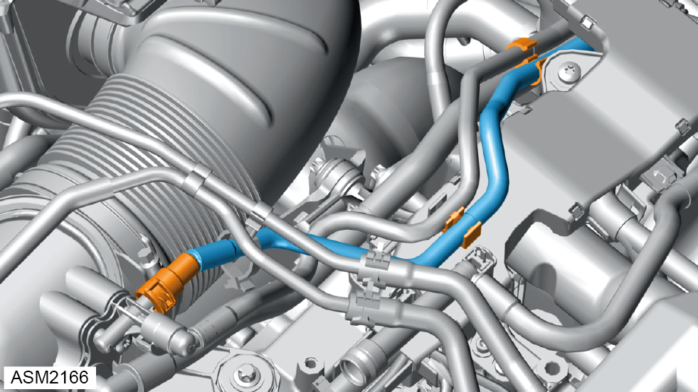
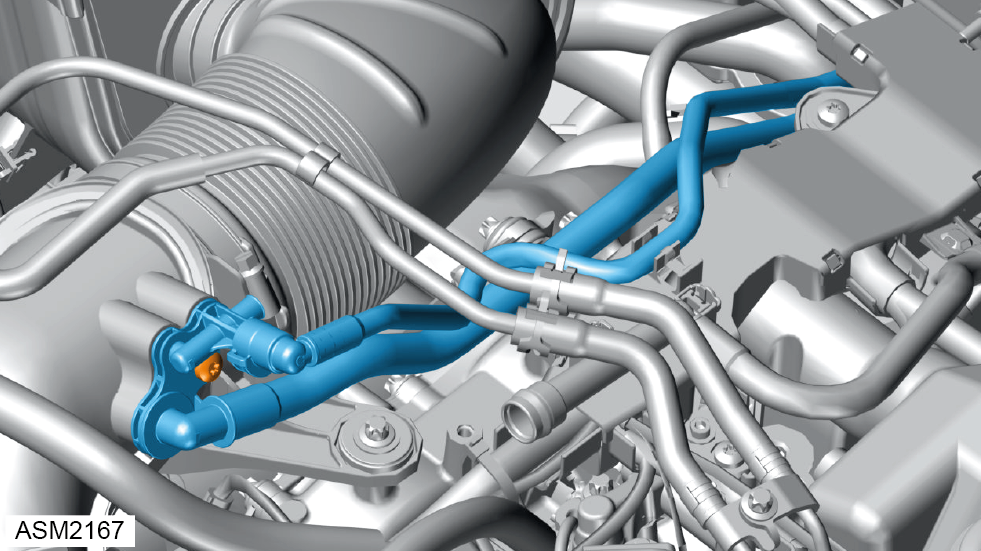
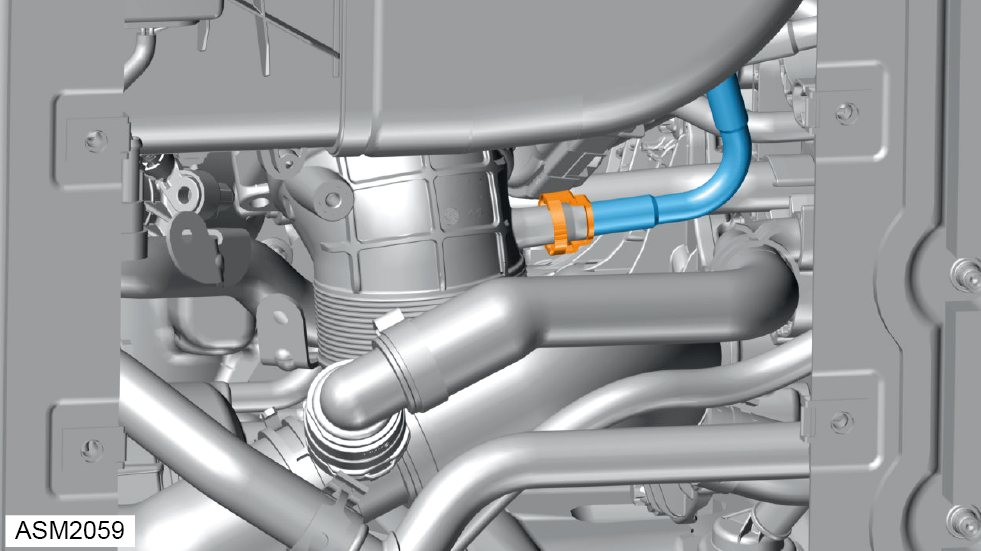
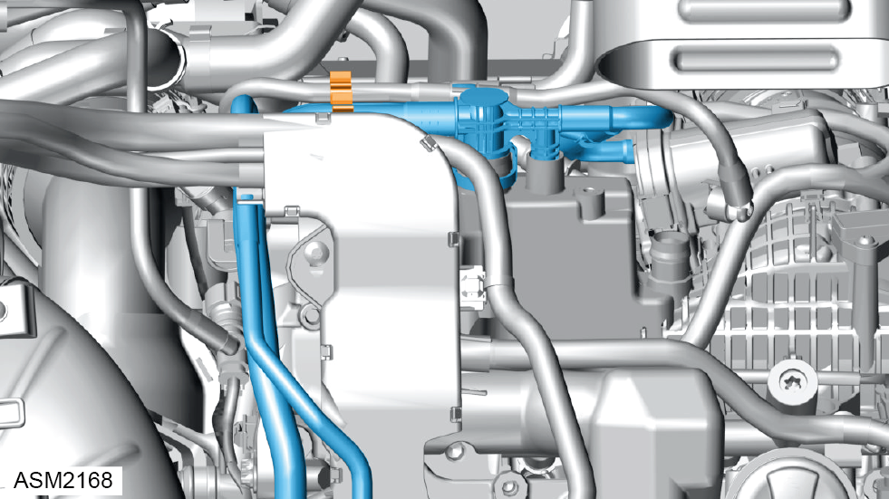

Bleed Line - Air Intake Pipe - 4 Cylinder
Print
Operation Code: 43.03.14-02
Removal
- Remove engine cover. Refer to procedure.

- Release connector and disconnect purge line from bleed line.
NOTE: Plug purge line to prevent ingress of dirt.
- Release clip securing purge pipe to bleed pipe.
- Release bleed pipe from engine harness.

- Remove screw securing bleed pipe to air intake pipe. Torque 9 Nm.
- Disconnect bleed line from air intake pipe.

- Release quick connector and disconnect bleed line from throttle air intake.
NOTE: Pinch the two buttons on the quick connector and pull to remove.

- Release clip securing bleed line to purge line.
- Disconnect bleed line connections (x2) from charge air distributor.
NOTE: Plug charge air distributor to prevent ingress of dirt.
- Remove bleed line.
Installation
- Installation is the reverse of removal procedure.
NOTE: Push quick connector until an audible click is heard.